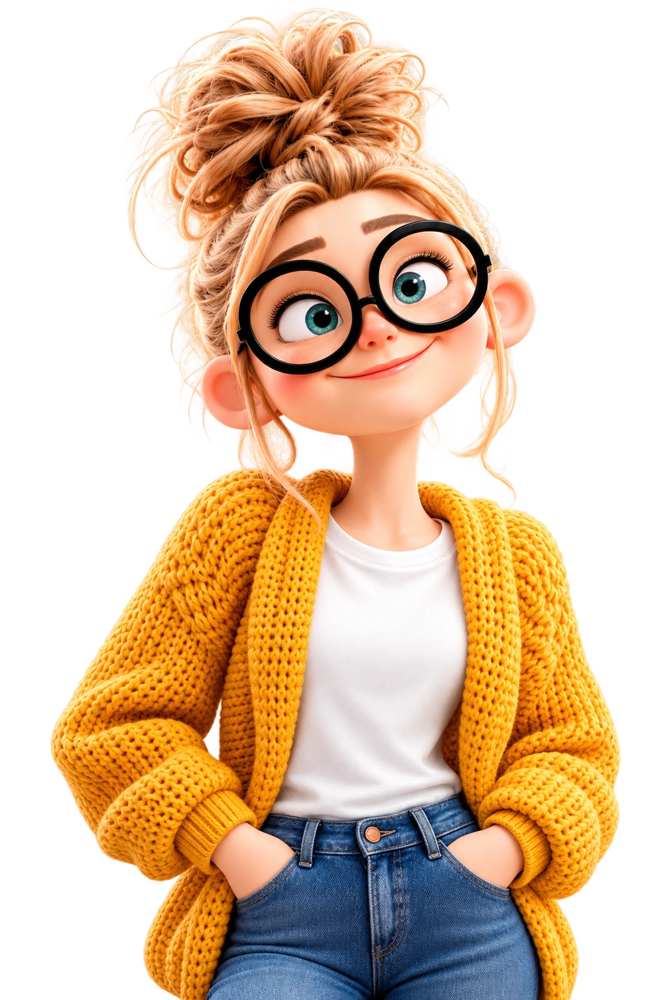

01 / NUESTRA HISTORIA
Lo que somos empezó mucho antes del nombre.
Después de siete años de trabajo independiente, esta experiencia toma una identidad propia: ColorClik. Un estudio creativo que une cercanía, diseño y tecnología.
Un nuevo nombre para seguir creando con la misma dedicación.